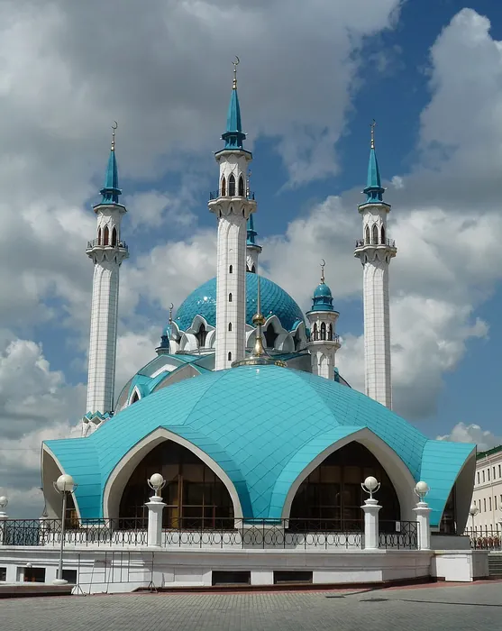
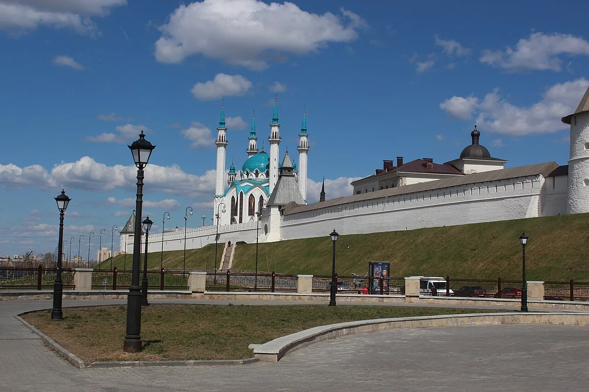
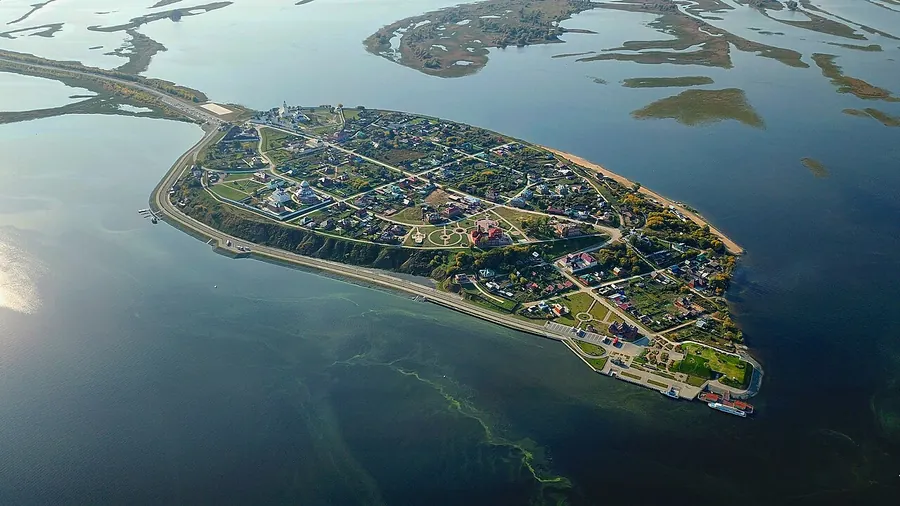
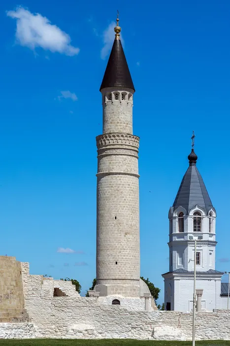
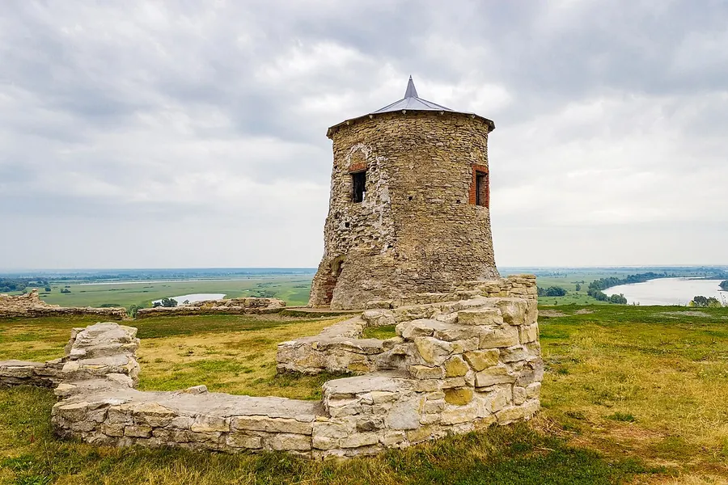

Казанский кремль
За белыми стенами исторической крепости стоят Благовещенский собор, башня Сююмбике и мечеть Кул-Шариф.
Там, где Кама встречается с Волгой, белые стены Казанского кремля, островные храмы и руины Болгара хранят память о разных эпохах.

Татарстан расположен на востоке Восточно-Европейской равнины. Волга и Кама делят его на несколько природных районов. Столица, Казань, стоит у впадения Казанки в Волгу. Среди крупных городов — Набережные Челны, Нижнекамск и Альметьевск.
Волжская Булгария официально приняла ислам. С этим событием связано путешествие посольства из Багдада, описанное Ибн Фадланом.
Войска Ивана IV взяли Казань. Казанское ханство вошло в состав Русского государства.
Образована Татарская АССР со столицей в Казани.
Принята Декларация о государственном суверенитете республики.
Республика получила современное название. В том же году принята Конституция Республики Татарстан.

За белыми стенами исторической крепости стоят Благовещенский собор, башня Сююмбике и мечеть Кул-Шариф.

Свияжск основали как крепость в 1551 году. В ансамбле Успенского монастыря особенно ценны фрески XVI века.

На берегу Волги сохранились руины средневекового города, в том числе стены Соборной мечети и каменные мавзолеи.

Круглая каменная башня на высоком берегу Тоймы напоминает об укреплённом поселении, возникшем в эпоху Волжской Булгарии.
Волга и Кама образуют широкие плёсы Куйбышевского водохранилища. Волжско-Камский заповедник включает лесной Раифский и прибрежный Саралинский участки.
Сабантуй вырос из праздника земледельческого труда. В его программе сочетаются песни, танцы, игры и борьба көрәш. В культурной жизни республики звучат татарский и русский языки.
Эчпочмак — треугольный пирожок с мясом, картофелем и луком. Чак-чак из жареного теста с мёдом подают к чаю, а круглый пирог с многослойной начинкой называют губадией.